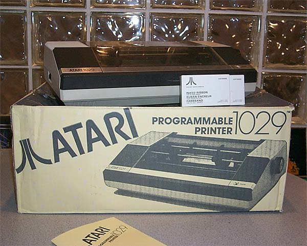
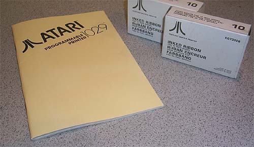

The Atari 1029 printer was one of Atari's final printers for the XL series
computers in 1984. It was released in very limited quantities
through Atari's Ireland headquarters for Europe. Both
110vac and 220vac versions exist. The printer mechanicals
were design by Seikosha. In fact, nowhere on the internal boards
& mechanicals is the name Atari. Only the case design,
done by Tom Palecki, a former Atari Industrial Designer, was actually Atari.
Seikosha also made Tandy and Commodore versions of its printer as well.
